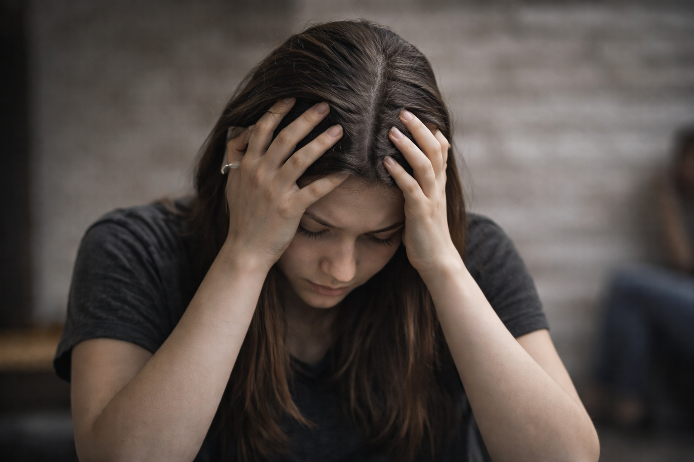
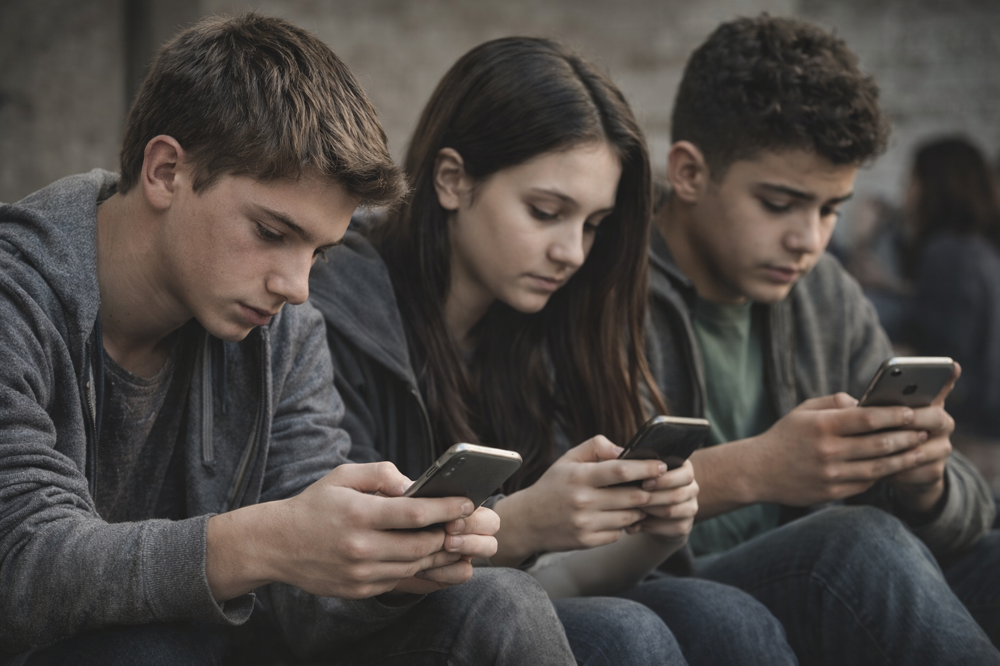

Negative Impacts
- Self-Esteem & Anxiety: Constantly comparing oneself to others’ posts can make people feel inadequate. This pressure to appear perfect online increases stress and anxiety.
- FOMO:Seeing friends join events or trends can make someone feel left out. This fear of missing experiences causes emotional distress.
- Cyberbullying: Hurtful comments or online harassment lower confidence and self-worth. Victims may feel anxious or avoid social interactions.
- Addiction: Spending too much time on social media disrupts studies, work, and real-life connections. Users may feel uneasy when offline, showing signs of dependency.
- Sleep Problems: Using phones late at night exposes eyes to blue light, making it hard to sleep. Engaging with content also overstimulates the brain, reducing sleep quality.
Positive Effects
- Improved communication with friends and family
- Spreading awareness and opinions
- Learning and business opportunities

Tips to Reduce Harm
- Set screen-time limits
- Take breaks from social media
- Follow positive content
- Spend time offline
- Turn off notifications